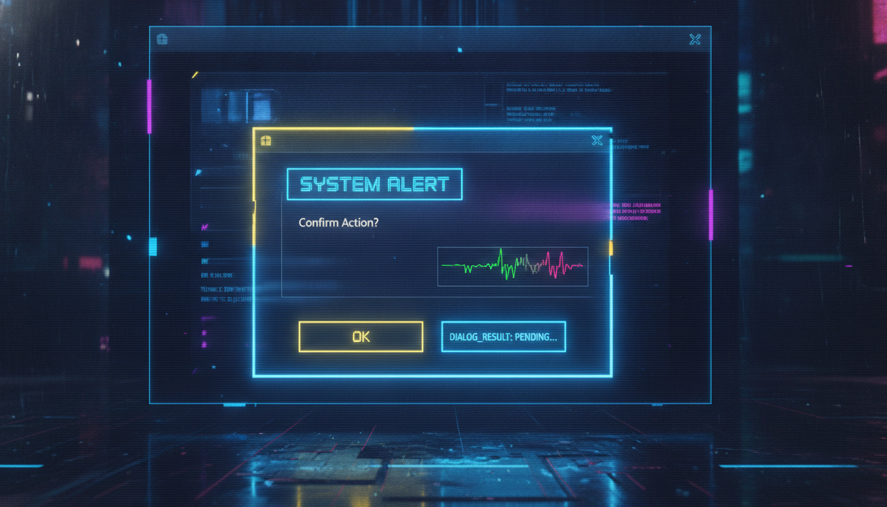

ShowDialog, DialogResult, передача даних

// Діалогова форма
public ref class InputDialog : public Form {
public:
TextBox^ txtInput;
Button^ btnOK;
Button^ btnCancel;
property String^ InputText {
String^ get() { return txtInput->Text; }
}
InputDialog() {
this->Text = "Введіть дані";
this->Size = Size(400, 150);
this->FormBorderStyle = FormBorderStyle::FixedDialog;
this->MaximizeBox = false;
this->MinimizeBox = false;
this->StartPosition = FormStartPosition::CenterParent;
txtInput = gcnew TextBox();
txtInput->Location = Point(20, 20);
txtInput->Size = Size(340, 25);
btnOK = gcnew Button();
btnOK->Text = "OK";
btnOK->Location = Point(200, 60);
btnOK->DialogResult = DialogResult::OK;
btnCancel = gcnew Button();
btnCancel->Text = "Скасувати";
btnCancel->Location = Point(280, 60);
btnCancel->DialogResult = DialogResult::Cancel;
this->Controls->Add(txtInput);
this->Controls->Add(btnOK);
this->Controls->Add(btnCancel);
this->AcceptButton = btnOK;
this->CancelButton = btnCancel;
}
};
// Використання
InputDialog^ dlg = gcnew InputDialog();
if (dlg->ShowDialog(this) == DialogResult::OK) {
MessageBox::Show("Введено: " + dlg->InputText);
}